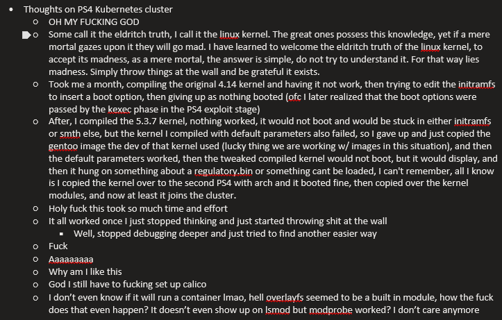

What is a PS4? At its core it is a x86 PC, running 8 of AMD's Jaguar cores from it's worst days at a measly 1.6Ghz. It is so weak, that the system menu was offloaded to a separate ARM chip in order to conserve system resources. Now you might ask, why try to run Kubernetes on this weak, old piece of hardware? Surely there are better nodes out there for a fraction of the price? To that I have a single answer:
Because it's funny.
The Kernel is avaliable here on my Github
The Starting Point
Linux on the PS4 is nothing new, other people have a better account of that history in other places. The only relevant part to this endeavor is that there are images of linux distros designed to boot from a PS4, and the kernels for those linux distros are avaliable from developers far smarter than I am.
I started my journey with the Psxitarch Image from the Psxita team, and updated by hippie68 in their psxitarch how-to guide, which I then proceeded to update to the latest Arch packages and uninstall the windows manager from.
I then found a blog post by Daniel Baron who got docker running on their PS4, and all they had to do was recompile the kernel with a few flags changed. "Simple enough" I thought, and I tried kubernetes with their kernel image. It didn't work. And thus my nightmare started.
What I Tried
First, Kubernetes was complaining about not having some cgroups it needs, notably cpu and cpuset. I thought this was a config issue and recompiled the kernel from David, no dice. I checked the kernel configuration, and sure enough the cpu and cpuset cgroup options were enabled, but neither were showing up in the cgroups.controller file. I then tried to inject boot options in the initram image that the PS4 uses to boot into Linux and the edited initram would not boot. I learned that boot options were actually handled at the kernel exploit phase before the PS4 Linux exploit actually kexecs into the new kernel. I was ready to give up, I did give up. I did not look at my PS4 again for about 3 weeks and went on with my life, a wise decision in hindsight.
Compiling My Own Kernel Like A Real Arch User
At this point I had resigned to the PS4 being a normal Linux box, maybe I could run Nginx on it and leave it at that, it would still be funny I thought to myself. But then, one day, I remembered there are other Linux distros packaged for the PS4, and one of them, Gentoo Linux, came with a 5.3.7 kernel instead of the 4.14.93 kernel that came with Psxitarch. I had no hopes left by this point, I honestly thought that the PS4 silicon simply did not have support for cpu cgroups. I loaded up the 5.3.7 kernel and...
#: cat /sys/fs/cgroup/cgroup.controllers
cpu memory pid
I have cpu cgroups enabled? how? I thought? Wait... Can I just like... recompile the 5.3.7 kernel with the right options?
I cloned the 5.3.7 gentoo kernel repository and compiled a kernel with all the neccessary cgroups enabled, and... the PS4 won't boot. I compiled the kernel again with the default options, and it still wont boot. I then remembered that this kernel required a patch to tell objtool to shut up about some missing symbols in order to complie on the updated Arch I was running. I could debug this issue or, I can just replicate the original build environment. I wonder how I could do that... wait... isn't there an image for the Gentoo installation that the kernel creator used? I complied my kernel in that Gentoo environment and everything booted fine, I even had all the Cgroups I wanted! This might work!
The Linux Kernel Configuration File
I never knew this, but the Linux kernel is Insanely modular. That makes sense, given the amount of devices that run linux, but there are kernel configs hidden everywhere! Kernel options have dependencies and relations to other config options, and the only way to adjust them manually is by the config menu. But I found what was hiding the options Kubeadm was complaining about, and I finally got Kubeadm to initialize.
The Linux Kernel Options Hell
Now, Kubeadm stopped complaining, which was all good, but I needed a networking layer. I picked Calico because it is what my much smarter friend uses. "I now have a Kubernetes node!" I thought, "This should be a piece of cake!"
It was difficult, lemon difficult.
At first, the containers were complaining, something about a cpu cgroup thing. Turns out while the cpu cgroups were avaliable, they were not enabled. I had to spend 2 hours troubleshooting and learning how to disable processes to let me enable the cpu cgroup because the cpu cgroup won't enable if there are processes scheduled on the original cgroups or something.
 My actual thoughts about this whole endeavor at this point (this was 3 AM)Then Calico did not work, because Calico wanted a bunch of networking features from the kernel. I went back to compiling the kernel and did what can only be described as trial and error. I had no idea what any of the options meant, and there were a LOT of them. I ended up just enabling everything under a section in the kernel menu, trying the kernel, rinse and repeat until calico finally stopped complaining
Finally, after all the trials and tribulations, I had a kernel that worked fine with Kubernetes and Calico. And it has not complained since, and I have a Kubernetes cluster with 2 PS4 nodes.
 Gonna start my own AWS brb.
· Image From
The Security Service of Ukraine
Gonna start my own AWS brb.
· Image From
The Security Service of Ukraine